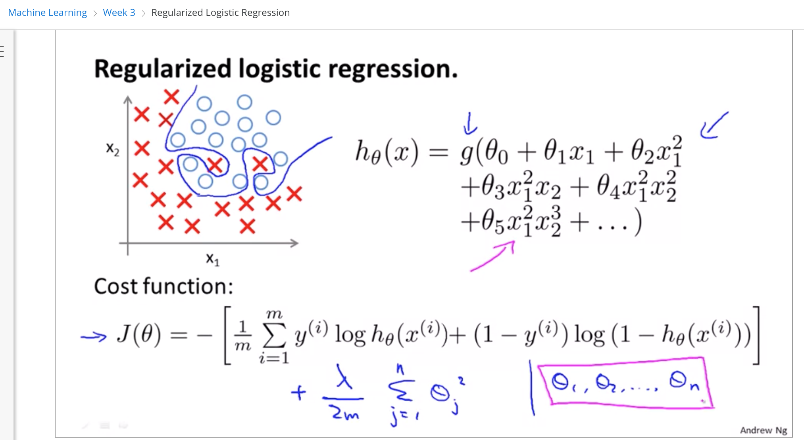
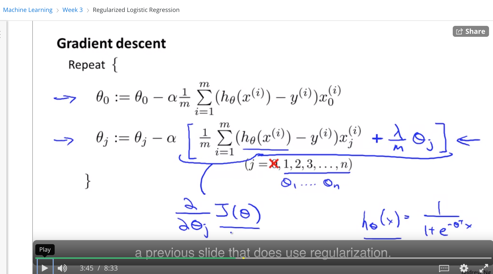
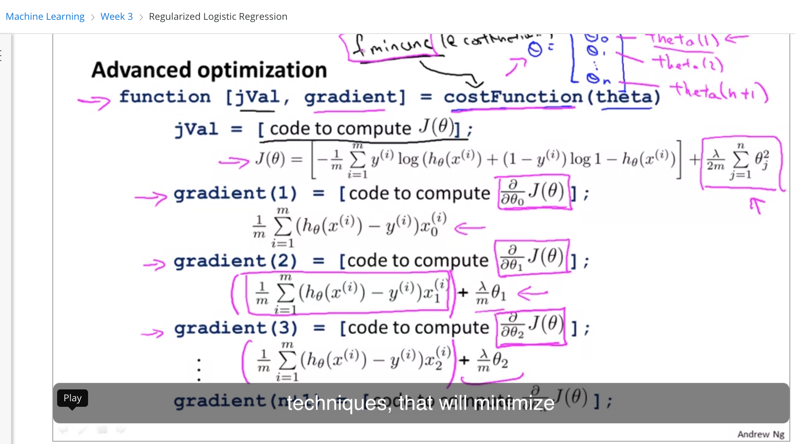

coursera的吴恩达机器学习课程第三周---regularized logistic regression
05 September 2020
coursera的吴恩达机器学习课程第三周—regularized logistic regression
课程资料：
https://www.coursera.org/learn/machine-learning/lecture/4BHEy/regularized-logistic-regression
学习笔记
这节主要是说对logistic regression如何做regularization, 主要还说针对cost function做修正


最后在做梯度下降的时候对多加的部分也要做计算
